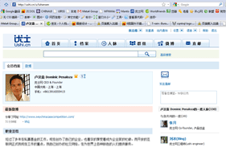

如何让优士为您发挥最大的价值

建立一份完整、真实的人脉档案
花一些时间，在优士网上建立和维护一份最能体现您自己的完整、真实的个人档案，并给将您带来更多商业合作和职业提升的机会。
- 完整填写您的工作、教育经历，使您有更多的机会通过搜索被找到；
- 添加一张头像图片，可以大大提高档案的点击率；
- 给自己写一段精彩的职业总结。让对方在短时间内关注你。
您无需过多隐私问题，我们提供丰富的隐私设定，您可以根据自己的意愿进行定制。
将现实生活中的人脉关系映射到网上
通过使用MSN导入和邮件通讯簿导入功能，您可以发现自己身边的哪些朋友已经在优士上注册了，还可以邀请新的联系人成为优士上的一度人脉。
我们还提供多种其他多种邀请方式可供选择。
开始利用优士来发挥人脉网络的力量！
只要拥有了一份令人印象深刻的档案并将现实生活中的人脉网络搬到了网上，您就可以畅通无阻的使用优士网并让它为您发挥最大的价值了。
我们推荐您使用以下的功能：
- 经常在优士上发布微博，记录稍纵即逝的点滴灵感和收获，还可以与身边的朋友分享精彩的网址和文档资料。
- 浏览并加入一些感兴趣的群组，既能够使您与行业内的朋友相互交流和共享信息，还能够帮助您更有效的扩展人脉。
- 使用搜索功能帮助您发现更多人脉。无论是商务合作还是职业招聘，优士网上高质量的人脉资源都将给您带来意外的惊喜。